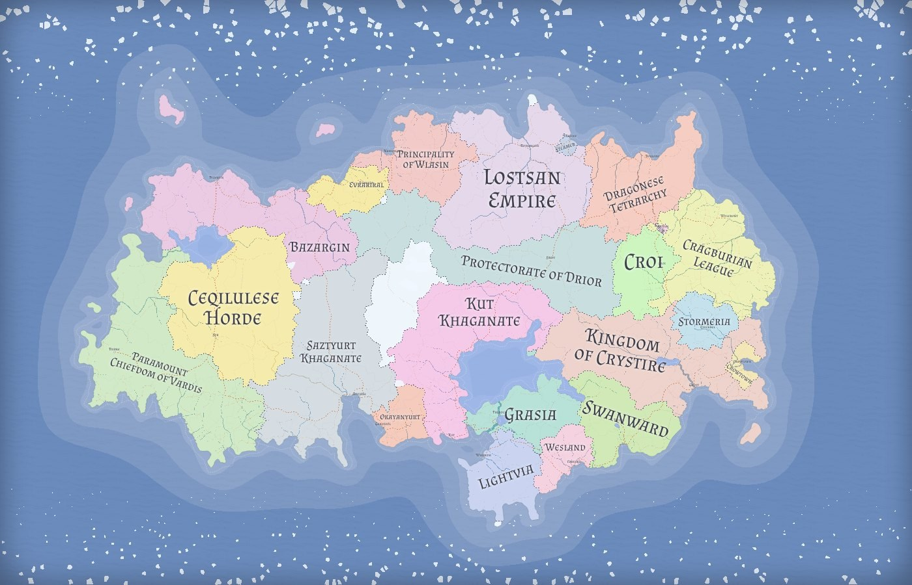

【新】地面を5つの大きな区分にまとめた版との比較は こちら(mapstyle2) です。
世界地図の絵を、どこまでデフォルメしてファンタジーにできるか
ユーザー案(2026-11-17)「絵を基本とする。元の地図の画像を手法を使ってどれほどデフォルメできるかを詰める」の、段階つきの試作です。元は、ハブにあるAzgaar方式の地図の絵(1400×900)で、これは試験の素材です(AzgaarかPWGかの採用とは別)。標高と生物群系のデータで、山・丘・木の場所を決めています。見て、「どの段階までなら良いか」を教えてください。段階4は、地球の衛星画像から集めた色の型と、作法の調査の手順を取り入れた新しい方式です(2026-11-18)。
段階0: 元の画像

国の色と国名つき。分かりやすいが、ファンタジーの絵の面白みは薄い。
段階1: 紙+海岸の墨線

国名と国境を消して国の色だけの清書にし、紙の質感と古地図の色合い、海岸の墨線を足した。名前はアプリで重ねる想定。
段階2: +山・丘・木の絵、海の波線

標高の高い所に山の絵、中くらいの所に丘、森林の所に木を置いた。海岸に沿って波の線。手描き地図の感じが出る。
段階3: 強いデフォルメ

色数を減らし、海岸線をなだらかに大づかみにし、絵を大きくして数を減らした。上下を少しぼかして模型風に。
段階4a: 色の混在率の型で塗る(新)

地球の衛星画像から集めた「色の混在率の型」(色の混在率のパターン化)を、地図の気候区分と標高から決めた地面の種類に貼った。作法の調査(mapcraft1)にもとづき、白黒の起伏に色の層を重ね、海は岸から離れるほど濃くし、最後に128色へ減色してディザをかけた。地球の森は暗すぎるので、色は明るく持ち上げている。
段階4b: +海岸の墨線・波線・山の絵(森は省略)

4aに海岸の墨線と波線、山の絵を足した。森は「飾りなので最後」という作法にならい、木の絵は置かず、色の型だけで表している。山の絵は仮の記号で、数が多すぎる。
この試作の限界(正直に)
- 山・木の絵は、私がプログラムで描いた簡単な記号です。ここが一番の伸びしろで、本物の絵にするなら、画像生成AIへの注文(山・木・ランドマーク)が要ります。
- 国名と国境は、見やすさのため一度消しています。
- 2D の絵の試作です。これを立体の地図に貼る(標高の面に貼る)のは、見た目が良さそうと分かってからにします。
- iPhoneでの重さは未測定です(絵は事前に作る画像なので軽い見込み)。